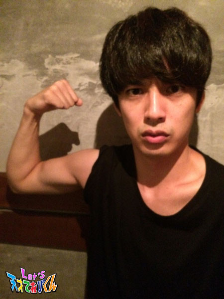
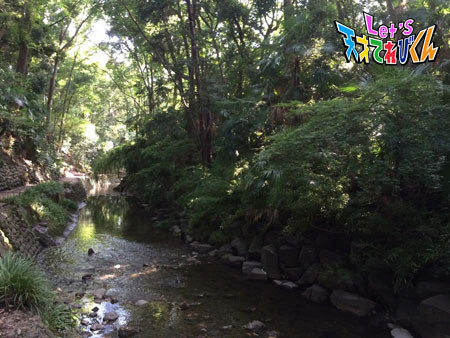
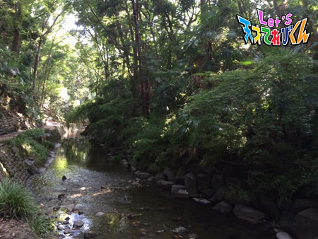
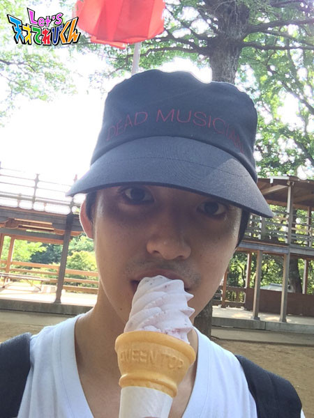
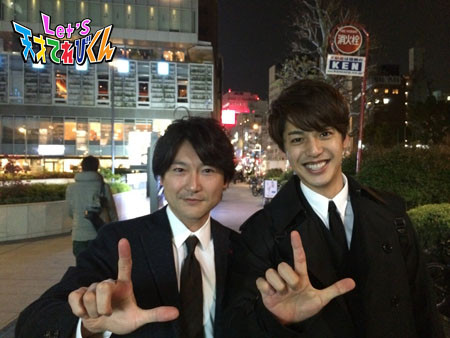
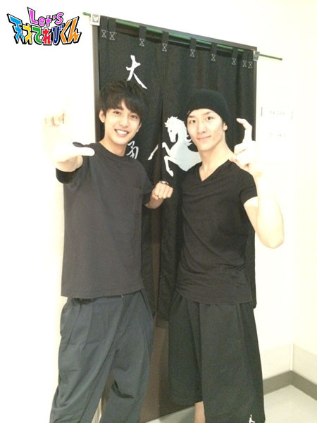

<<2014年7月 | トップページ | 2014年9月>>
2014年8月
夏ならではのお楽しみといえば・・・［赤崎月香］
こんにちは ヽ(^▽^@)ノ
赤崎月香です。
！！！ 暑い ！！！
夏本番ですね♪
夏は、やっぱりエアコンの効いた部屋で
ゴロゴロ～ ( ( (((＿⊿＿) したいです。
☆。・:*:・°★,。・:*:・°☆
そうだっ！！！
みなさんも涼しくなるために、バッサリ髪の毛を切っちゃう♪
っていうのはどうですか？
結構、涼しいですよ～
そう思うのは、わたしだけですかね？ヾ(。ё◇ё。)ノ
暑いので切っちゃいました～♪←いつもですが・・・
髪の毛を切ってもらうのは、
気持ちが良くて、うとうとしてしまいます(ゝ_ξ)
わんちゃんは、美容師さんのペットで
とっても大きくて、とってもお利口さんなんですよ♪
☆。・:*:・°★,。・:*:・°☆
よしっ！夏だしっ！夏休みだしっ！
弾けちゃおーーーーー！！！Ｏ(≧▽≦)Ｏ
わたしの夏ならではのお楽しみといえば、
☆彡 ネイルサロンに行って、超ゴージャスな
キラキラストーンたっぷりの指先にしてもらって～
☆彡 長～いエクステンションをつけて
ロングヘアでお姫様みたいにクルクルカール～
☆彡 お泊り会を開いて、夜中までお友達と内緒話し～
☆彡 足にジャラジャラたくさんのミサンガをつけて～
☆彡 真っ黒になるまで、毎日お友達とプールざんまい～
ヾ( ￣▽)ゞオホホホホホ～～～☆
☆。・:*:・°★,。・:*:・°☆
・・・・・・・・・って、妄想？(∇〃)。o〇○ しながら、
おじいちゃんが作ってくれたスイカを
大きく切って食べるのが楽しみ～♪
お祭りで顔より大きなわたあめを食べるのも楽しみ～♪
☆。・:*:・°★,。・:*:・°☆
早く大人になりたいと思うこともあるけど、
やっぱり子どもの夏は楽しいのだ ヾ(〃^∇^)ノ
宿題も進んでるし、夏休みを楽しもう！！！
またね～ヾ(*'-'*)
投稿者:赤崎月香 | 投稿時間:18時45分 | カテゴリ：てれび戦士 | 固定リンク
夏ならではのお楽しみといえば・・・［林武尊］
こんにちは、林武尊です。
今回のテーマは、夏ならではのお楽しみ！
ぼくが夏休みに必ずすることは、
お母さんの実家へ帰って、近くの釣り堀で釣りをすることです。
田舎に帰ると、必ず近くの温泉に行くのですが、
そこには釣り堀とスキー場があって、夏は釣りを冬はスキーをやります。

釣り堀のコツは…エサを釣り針に付けて待つだけです。
すごく簡単です（≧∇≦）
釣る魚はあまごで、すごくいっぱいいて、人がたくさん来てもぜんぜん減らないから安心です！
その場で焼いて食べたり、家に帰って、からあげにしたりします。
ぼくがあまごの料理の中でおすすめなのは、ズバリ【あまごの塩焼き】です！
そして実はぼく、釣るのは大好きなんですけど、
釣ったあとが大変で魚の口についた釣り針を、
自分で1回も取ったことがないんです…
取ろうとして勇気をふりしぼってやってみるんですけど、
魚がピチピチはねて、うまくできないんです（－＿－；）
エラの所を持つといいよ、とアドバイスをもらってやってみても、なぜかはねてしまいます。
今度こそ、うまく取るぞ！
今回は、17匹釣りました。
今年のあまごは、小さかったけど、すごくおいしかったです！！！
投稿者:林武尊 | 投稿時間:18時54分 | カテゴリ：てれび戦士 | 固定リンク
夏ならではのお楽しみといえば・・・［飯島緋梨］
こんにちは。
飯島緋梨です。
今回のお題は、
夏ならではのお楽しみ。
旅行にプールといろいろあるけど、
やっぱり、年に1度の夏休み乗馬教室かな(^_^)
毎年、学校で希望者を募り、体験させてもらいます。
去年は、抽選で外れてしまったけど、今年は参加できることになりました*\(^o^)/*
朝早く集合して、学校のみんなと馬のことを教えてもらい、
馬をくしでとかしたりしてから、学校の近くの山で馬に乗せてもらいました。

最初は馬の背中に乗ったとき、チョットこわかったけど、
遠くまで景色が見えて気持ちよかったです(^_^)
馬を近くで見ると、すごくキレイな目をしていてカワイイです。
来年は、ニンジンとかおみやげに持って行って、食べさせてあげたいなと思います。
投稿者:飯島緋梨 | 投稿時間:18時45分 | カテゴリ：てれび戦士 | 固定リンク
夏ならではのお楽しみといえば・・・［辻村晃佑］
「夏ならでは」といえば、
夏休みがあるので、その長い休みの中でいろいろなことをやります。
その中でも毎年やるのが旅行です(・∀・)
意外と普通だなって思ってる人がいると思いますが、旅行って奥が深いんですよ。
その場所を観光して、たまに知らなかったことを見つけたときは、
ここに来てよかったなぁと思います。
なので、ぼくの夏のお楽しみといえば旅行です。
ちなみに、今年はもう行ってきました。
遊園地に行ったので、いろいろなアトラクションに乗りました。
実は絶叫系とお化け屋敷が大の苦手なので、それ以外のアトラクションですけどね(；´∀｀)
みなさんもこの機会に気になっている場所に行ってみては、どうですか？
Let's 旅行！
投稿者:辻村晃佑 | 投稿時間:18時45分 | カテゴリ：てれび戦士 | 固定リンク
21世紀調査報告書その6［大野拓朗課長］
茶の間戦士諸君、いかがお過ごしかな？
夏休みも、もうあと1週間くらいか。
夏休みは、満喫できたか！？
ずっと宿題サボってて、残りは遊べずに宿題漬けの毎日、
なんてことにはなっていないだろうな！？
夏休みは、1年に1度しか来ない。
そして、今の君の学年、年齢での夏休みは今年で最後。
つまり、ある意味人生で1度しかない夏休みなんだ。
同じ夏は、2度と来ない。
悔いのないよう、残りの夏を楽しむんだ！！
さて。私はというと、
夏休みが終わるととにかく忙しくなってしまうのだ。
ITAISENの課長は、
春夏秋冬関係なくずっと忙しいのだが、今回は、特別。
みんなも知っての通り、22世紀の人類は、別の星にお引っ越しせねばならない。
そう、異次元獣の脅威から逃れるための移住計画だ。
そのために、世界中の人々をまとめたり、手続きをしたりと大忙しになる。
だから、本当に本当に本当に名残惜しいのだが、
この手紙をもって、君たちへの通信は終わりとなる。
また、お引っ越しが終わって落ち着いたら
別の星から21世紀の君たちへお手紙を書こうと思う。
21世紀の地球はまだ存続しているからな。
みんな、元気でいてくれよ。
私は大丈夫だ。
今にも泣き出してしまいそうだが
必ず、別の星でも大阪に現れるスプーンの異次元獣のことを
たくさんたくさん研究して、21世紀の地球を救いに戻ってくるからな。
だから、安心して1日1日を大切に
家族、お友達、学校の先生、
君たちのまわりにいる君たちを支えてくれている
すべての人、ものを大切に
楽しく過ごすんだぞ。
少しセンチメンタルになってしまったかな……。
…………。
やっぱりだめだ。
我慢できない。
私はとっても寂しい！！！
別の星に行きたくないよーーー
みんなと離れたくないよーーー
スプーンの異次元獣のばかやろーーー！！！
ときには、自分の感情を吐き出すことも大切なんだ！！
そして、この涙を私は決して忘れない！！！
この悔しさを糧(かて)に
必ず、スプーンの異次元獣の弱点を見つけ出してやる！！！！！
君たちもその日を待っていてくれ！！
さあ、このままでは涙の別れになってしまう。
湿っぽい(しめっぽい)別れは苦手なのだ。
最後に楽しい話をしようではないか！！
21世紀にいた頃、日本だけでなく世界中の調査をするため、
仮の姿「俳優・大野拓朗」として、
あるテレビ番組に出演させてもらっていた。
今日の写真は、21世紀のスタッフさんたちとお花見をしたときのものだ。

この番組は、ものすごく楽しくてな
外国の山奥の人が少ない村とかに
なぜか、日本人が1人で住んでいるのだ！！
なぜ、こんなところに！！
その人の元へ、21世紀の偉大な俳優さんたちがたずねて行くのだが、
その人の生い立ちや、その村での生活など、
いろんなお話を聞くことができて、
人生の勉強になるんだ。
さらに、外国ってこういうところなんだと知ることができる。
お湯が出ないから毎日水でシャワーを浴びるとか、
水すら出ないからバケツを持って遠くまで行かなくちゃいけなかったり、
トイレが家の中になくて離れたところにあるから、
夜とかは暗い中、怖いけど頑張ってトイレまで歩いて行かなくちゃいけなかったり、
いろんな大変なことがあるということを知ることができて、
自分がどれだけ恵まれた環境にいるのか、
ぜいたくしたり、わがまま言っちゃいけないなと思えるんだ。
観たら、将来の夢が変わるかもしれないな。
いろんな外国のおいしいものを食べたり、
いろんな外国のまずいものを食べたり(笑)、
いろんな外国の乗り物に乗ったり、
いろんな外国の人と話したり、
日本人に会うまでの道のりもすごくおもしろい。
ああ、そろそろ移住計画のしごとに戻らなければ。
なごりおしいが、楽しい話もこれで終わりだ。
茶の間戦士諸君、元気でな。
必ず、また会おう！！！
Let's、再会！！！
投稿者:大野拓朗課長 | 投稿時間:18時45分 | カテゴリ：未来人 | 固定リンク
夏ならではのお楽しみといえば・・・［齋藤茉日］
こんにちは♪
茉日です(^o^)/
夏って暑いですよね？
エアコンのない部屋に行くと、なんだか汗がダラダラ~_~;
ちょっと動くと汗がダラダラ~_~;
温かいものでも食べれば。。。ダラダラ~_~;
もー、普段そこまで汗はかかない茉日でも汗が垂れてしまう日々？
でも、夏は悪いことばかりではない！
私の夏の楽しみは、いろいろあります！
アイスが食べれること。
プールに入れること。
旅行に行けること。
どれも私の楽しみだけど、
やっぱり私は、いろんなオシャレができることが楽しみです！
茉日は、お洋服を選ぶの大好きです(^o^)/
夏に、こんなお洋服を着ました！
これは、お祭りに行ったときに浴衣を着たよ！お洋服じゃなかったね。
お次は！？
ダンスの応援に行ったときに、ちょっと背伸びをしたコーデをしたり？

これは、女の子らしく！
こんな感じで、おしゃれを楽しんでいます！
皆さんは夏、どんな楽しみがありますか？
それでは*\(^o^)/*
投稿者:齋藤茉日 | 投稿時間:18時45分 | カテゴリ：てれび戦士 | 固定リンク
夏ならではのお楽しみといえば・・・［小西憧弥］
こんにちはー(^o^)/憧弥でーす！
この前、家族でニジマス釣りに行ってきました。
手づかみもしました。
そのあと、釣れたニジマスを塩焼きにして食べました。
白身がやわらかくて、すご～く美味しかったです！
それと縄跳び…記録のびません（－＿－；）
…もっとがんばります。
夏休みの宿題は、順調です(^_^)v
それでは、本題「夏ならではのお楽しみといえば…。」
ぼくは、奈良のおじいちゃん・おばあちゃんと行くお祭りが毎年楽しみです。
去年は、お姉ちゃんと2人だけで新幹線で行ったのでドキドキだったけど、
今年は家族で行けました＼(^o^)／
お祭りに行って、くじ引きや金魚すくい、射的、カタ抜き、ほかにもいろいろしました。
そして、必ずかき氷を食べます！
今年は、みぞれのシロップにれん乳をかけてみました。
あま過ぎたかなー(・_・;
かき氷を食べたあとは、必ずお腹が痛くなったゃうんだけど(>_<)
美味しいから、また次も食べちゃうんだなー。
来年もまた、おじいちゃん・おばあちゃんと一緒にお祭り行きたいです！
投稿者:小西憧弥 | 投稿時間:18時54分 | カテゴリ：てれび戦士 | 固定リンク
夏ならではのお楽しみといえば・・・［杉本瑛］
皆さんどうも。
アイス大好き・杉本瑛です。
去年の夏休みに、私が作った俳句を披露します。
暑い夏 愛するアイスで 腹壊す
今年は、こんな風にならないように気をつけます！（笑）
皆さんも気をつけてくださいね。
さあさあ！
今回のお題は「夏ならではのお楽しみといえば・・・」です。
それは……
駅や建物のミストシャワー！(^o^)
これです！夏は暑い！
だから、ふわっとしたお水に包まれるミストシャワーは、
とっても涼しくて最高なんです（＾Ｏ＾☆♪
風で向きが変わるので「こっちだ！」や「今度はあっち！」と、
ちょこちょこ動いて涼しい場所を探すのも、また楽しいんです！
でも、あまりやりすぎると逆に汗をかいてしまうから、
1～2分くらいにしておく方が涼しいかも。
投稿者:杉本瑛 | 投稿時間:18時45分 | カテゴリ：てれび戦士 | 固定リンク
夏ならではのお楽しみといえば・・・［瀧澤翼］
毎日暑いですね～(￣▽￣;)
少し日焼けしちゃった瀧澤翼です！
夏といえば『夏休み☆』
みなさんは、どんな夏休みを過ごしてますか？
海やプール、キャンプにバーベキュー。
きっと楽しんでますよね♪
僕もこの夏休みを存分に楽しんでまーす(^-^ゞ
なんと沖縄へ行ってきちゃいました～♪
めんそ～れ～♪
アグー豚やマンゴー、紅いもに白玉ぜんざい。
どれも絶品でしたよ～！
ひとつ驚いたのは、沖縄では電車や新幹線がなくて、
モノレールが走っていたこと！
行ってみないと、わからないことってありますよね。
みなさんも残りの夏休みを楽しんでください！
Let's 夏休み！！
投稿者:瀧澤翼 | 投稿時間:18時45分 | カテゴリ：てれび戦士 | 固定リンク
21世紀調査報告書その5［大野拓朗課長］
ごきげんよう、茶の間戦士諸君。
夏休みも、もうあと少しになってしまったな。
夏を謳歌(おうか)しているか？
私はだな、相変わらず忙しいのだが
時間をみつけては筋トレをしている。
何度も言うようだが
ITAISENの課長というのは、本当に本当に本当に忙しいのだ。
しかし、仕事ばかりしていては疲れがたまってしまう。
ときには運動をして気分転換をすることが、仕事がはかどるコツなんだ。
諸君も、宿題や勉強をするのは大変素晴らしいことだが
同じくらい外でもたくさん遊んでくれ！！
あ、あと、これも気分転換のひとつとして
この間、未来カーを見に行ってきたぞ。
私は車が大好きなんだ！！！
運転するのも好き、見るのも好き。
だから、すごく幸せな時間だった。
大興奮(だいこうふん)してしまった！！！
ん？未来の車はどんなかって？
それはだな……
教えてはいけないと、未来法で決まっているのだ。
茶の間戦士の諸君すまない。
これを教えてしまうと
21世紀にも未来のハイテクノロジーカーがあふれてしまって
大変なことになってしまうのだ。
いやー、でも教えたいなー。
でもなー、怒られるしなー。
うーん…でも、みんなに「すごい！」って、ほめられたいしなー。
でもな、でもなー。
空にも道路ができて飛んで移動したり、
行き先を入力すると勝手に車自身が運転してくれて目的地に届けてくれたり、
ボタンを押すと大きさが変わって、たくさん人が乗れるようになったり、
変身して悪いやつらと戦ってくれたり、
ほかにもいろんな楽しい機能がついてるなんて教えられないしなー。
うーん……。
……………
……え、なに！？聞こえちゃった！？
………
……………
あ、いや、ちゃ、茶の間戦士諸君、そそそんなことは、決してないからな！！！
車が生き物のようにしゃべって友達になれたりなんか、絶対にしないからな！！！
ふう、危なかった……。
君たちの中に、未来の車を作り出す子が現れるかもしれないからな。
今のうちに、未来のみんなを楽しくさせてくれる車を考えといてくれ。
それでは、残りの夏休み、ラストスパートで楽しんで！！
またな！Let's！！！

投稿者:大野拓朗課長 | 投稿時間:18時45分 | カテゴリ：未来人 | 固定リンク
夏休みの自由研究は、これで決まり！［飯島緋梨］
こんにちは。
毎日、あついですね。
待ちに待った、夏休みが始まりました。
楽しみなことがいっぱいです。
花火も見たいし、プールにも行きたいな*\(^o^)/*
でも、その前に宿題が・・・(￣▽￣)
今年の夏休みの自由研究は、
今、育てているマンゴーについてです。
この前、マンゴーを食べたとき、
すごく美味しくて、増やしてみたくなりました。
調べてみると家でも育てられるみたいなので、種を植えてみることにしました。
1．平らな種を割って、中身を取り出す
2．種を傷付けないように渋皮をむいて洗う
3．最初は、水栽培
毎日、水をかえて日なたに置く
4．種が半分に割れて、小さい芽が出てきた！
5．種が黒くなって、本葉が出てきた
6．種から根っこが伸びてきたので、土に植えかえた
本葉の芽が重ならないように、太陽に向かって伸びている。
寒さに弱く、太陽の光が必要だとわかった。
学校で習った光合成のことについても、夏休みにもっと調べてみることにしようと思います。
いつか実がなる日が楽しみ！
皆さんも楽しい夏休みを*\(^o^)/*
投稿者:飯島緋梨 | 投稿時間:18時45分 | カテゴリ：てれび戦士 | 固定リンク
夏休みの自由研究は、これで決まり！［小澤竜心］
こんにちは！竜心です。
この前、少林寺拳法の大会がありました！
ぼくは、【親子の部】で2位でした。
毎年、お父さんと組んで出場しています。
一緒に演武を考えて、稽古していて、とても楽しいです。
来年は必ず1位をとり、全国大会に行きたいです。
そんな話をしているあいだに、もう夏休みですね♪
さて、今回のお題は、
『夏休みの自由研究』です。
ぼくのいちばんの楽しみは、田舎の秋田に帰ることです。
何が楽しみかというと、おじいちゃんが育ててる野菜を、見られるからです。
なので、自由研究は、
【 おじいちゃんの野菜を調べたい！ 】
調べる野菜は、夏といったら、
☆ アスパラガス
☆ トマト(ミニトマト)
☆ キュウリ
☆ なす
☆ ピーマン
☆ オクラ
この6つ。
おじいちゃんのオススメの野菜です。
調べ方は、
☆ 花の形
☆ 葉の形
☆ 実の形
☆ さわった感覚
☆ とった感想
☆ 食べた感想
この、6つを調べたいと思います！
早く田舎に帰りたいな～o(^o^)o
お、それでは、また会いましょう。
さようなら。
投稿者:小澤竜心 | 投稿時間:18時54分 | カテゴリ：てれび戦士 | 固定リンク
夏休みの自由研究は、これで決まり！［赤崎月香］
こんにちは ヽ(^▽^@)ノ
赤崎月香です。
ついに来ました、夏休み！！！ヤッホーィ(ノ^∇^)ノ
みなさんは、夏休みの予定は、もう考えましたか？
考えたっていう人も、これから考えるよっていう人も
夏休みって聞くだけでワクワクしますよねー
ワクワク((o(゜▽゜○)(○゜▽゜)o))ドキドキ
わたしは・・・
友達とプールに行ったり～♪
家族で海に行ったり～♪
スイカ食べたり～♪
花火したり～♪
バーベキューしたり～♪
おじいちゃんのお家にお泊りしたり～♪
やりたいこと、山盛りだよーーー
夏休み、足りるかなぁーーー
☆。・:*:・°★,。・:*:・°☆
あっっっ！！！！！
宿題があるんだった
||||||||||||||(*￣ロ￣)ガーン||||||||||||||||
どうしよう・・・ どうしよう・・・
強敵の宿題 ☆ 自由研究 ☆
今年は、飛行機についてまとめようと思います↑↑↑
例えば、飛行機が飛ぶ仕組みや、離陸・着陸のこと、
ＣＡさんに教えてもらった、機内の仕組み・・・などなど

やっぱり、自分の好きなことを自由研究にすると
楽しい宿題になると思います。(^_-)---☆
☆。・:*:・°★,。・:*:・°☆
毎年、夏休み最後には、宿題であわあわ慌てるので、
今年は、いつもより早く宿題に取り組もうと思いますv(*'-^*)ｂ
みなさんも宿題がんばってね！
わたしもがんばります！
またね～ヾ(*'-'*)
投稿者:赤崎月香 | 投稿時間:18時45分 | カテゴリ：てれび戦士 | 固定リンク
夏休みの自由研究は、これで決まり！［小西憧弥］
こんにちは～(^o^)/憧弥です。
夏休みですよ～！
宿題を早めに終わらせて、遊ぼー＼(^o^)／
毎日、がんばってる二重とびの記録は、連続51回にふえたよー！すごい？
終わったら、汗がとまらなーい（;￣O￣）
今回は「夏休みの自由研究は、これで決まり！」っていうお題です。
夏休みの宿題でなやむのは、いつも自由研究(ーー;)
今年はどうしようって、まだ考え中です。
三年生のときに頑張ったのは、「擬似餌（ルアー）で魚が釣れる理由」
釣りにハマってて、ブラックバスが大好きだから、三年生のときはこれに決めました。
表紙にはブラックバスの絵を書いて、擬似餌（ルアー）の種類を調べて絵に書いたり、
ルアーをお風呂に持って入って、それぞれの特ちょうや、動き方を調べました。
自分の好きなことを調べるのは楽しいから、今年も釣りに関係してることを調べようかな。
みんなも自由研究がんばろうね！
投稿者:小西憧弥 | 投稿時間:18時45分 | カテゴリ：てれび戦士 | 固定リンク
21世紀調査報告書その4［大野拓朗課長］
ババンババンバンバン
「歯磨けよ！」
ババンババンバンバン
「宿題やれよ！」
ババンババンバンバン
「夜更かしするなよ！」
ババンババンバンバン
「飯いっぱい食えよ！」
ババンババンバンバン
「たくさん外で遊べよ！」
ババンババンバンバン
「私のこと忘れるなよ！」
ということで。
2014年にいた頃、少し時間があったので、
21世紀の自然環境を研究しようとある場所へ行ってきた。

 

世田谷区(せたがやく)の等々力(とどろき)にある等々力渓谷(けいこく)というところだ。
ここは、東京23区の中にあるたったひとつの渓谷なんだ。
うーむ、すごいパワーを感じたぞ。
セミの声、鳥のさえずり、川のせせらぎ。
そして、空気がとても澄んで(すんで)いて
場所によって、温度も、匂いも、感じる空気も違う。
もしや！
東京都のどちゃもんは、この神聖な場所にいるのではないか……
むむむ………！！
茶の間戦士諸君！！
私は、もう22世紀で忙しいので、
もし等々力渓谷に行く機会があったら、
どちゃもんの気配を探りながら探索してみてくれ！！
頼んだぞ。
あ、あと、等々力渓谷に行った際には、
汗をいっぱいかくから
帰りにアイスを食べるとおいしいぞ！！

私もひとりで食べてきたぞー！！
わははー！！！
いやあ、それにしても。
私が小さい頃は、夏休みにはよく、
海に遊びに行ったり、キャンプして川で遊んだり、山登りしたりしたなあ。
キャンプのときのバーベキューが格別にうまいんだ！！
みんなは、夏休みにどこかへ出掛けるのかな？
ぜひとも、夏休みを満喫(まんきつ)してくれたまえ！！
それでは、また会う日まで！！
Let'sエンジョイ夏休み！！
投稿者:大野拓朗課長 | 投稿時間:19時56分 | カテゴリ：未来人 | 固定リンク
夏休みの自由研究は、これで決まり！［杉本瑛］
どうも、杉本瑛です。
ポップコーンを食べながら、ブログを書いてます^ ^
いちばん好きなフレーバーは・・・王道、キャラメルでーーす！
いっぱいキャラメルがかかっているものを選んで食べます（笑）
さあさあ、今回のお題『夏休みの自由研究は、これで決まり！』
私の自由研究でいちばん好評だったのは、「いろいろな外国のレポート」です。
クリアファイルにその国々の情報を書いた紙をファイリングして、
自由研究の展示に出しました。
ヨーロッパ版と中国版をつくりました。
現地の気候、通貨等を調べました。
展示を見てくれた人が面白いと言ってくれたのが、
ハンバーガーのチェーン店に行って、
お子様セットを頼んで内容や値段を調べたことと
その国の本物のコインを貼りつけておいたことでした。
たとえば、オーストリアとハンガリーはバスで移動したくらい近かったのに、
言葉も通貨も物価も違いました。
牛乳の容器も違いました。ハンガリーでは、ふたが緑色でした。
展示を見た人は、ハンバーガーやコインは身近なものだから、
国の違いがとても分かりやすかったと言ってくれました。
ちなみに、外国のコインをコレクションしてます！
投稿者:杉本瑛 | 投稿時間:18時45分 | カテゴリ：てれび戦士 | 固定リンク
夏休みの自由研究は、これで決まり！［瀧澤翼］
夏ですね～(＞人＜;)
暑くて水筒の中身がすぐに無くなってしまう、瀧澤翼ですσ^_^;
夏休みって遊ぶぞ～！と思うけど宿題がぁ…（泣）
夏休みの宿題の中でも定番なのは、自由研究です。
でも自由研究のテーマって、なかなか決まらないですよね。
僕は今年の自由研究に、歩道や道路の標識について調べてみようと思います。
家の近くには、いろいろな標識があります。
車から見たとき、歩いているときに見た標識やその意味などを調べて、
自分の家の周りのマップを作ります。
そして標識の写真を撮ってマップに貼り 、意味を書けば完成 ～！
せっかく調べたから標識を覚えて、交通ルールに従って遊びにいくぞぉ～！
僕の夏休み自由研究は、これで決まり*\(^o^)/*
皆さんも地域の標識を調べて、自由研究にしてみませんか？
Let's！！
投稿者:瀧澤翼 | 投稿時間:18時54分 | カテゴリ：てれび戦士 | 固定リンク
夏休みの自由研究は、これで決まり！［原田明莉］
★Hello★
原田明莉でーす！
てれび戦士とスッゴイ仲良くなってきてから、
私のあだ名は、
「だーはら」
と、名付けられました～～（≧∇≦）
結構、気に入っているんです！
こないだは、
「だーはらー、夏休み入ったー？」
と聞かれましたー！
「入ったー！でもさ、夏休みって宿題多いからやだよねー！」
という会話をしていました！
しかも、いちばん大変なのは宿題のなかでも・・・
そーです！
自由研究！！！
なんですょ～
みなさんも自由研究って、プリントとかよりも大変じゃないですか～^^;？
そこで、今回のお題は・・・
★夏休みの自由研究は、これで決まり！★
という、お題です！
私がお勧めする自由研究は、
☆星空観察☆
でーーーす！
（星空を撮れなかったので、花火写真で）
明莉もやったことあるんですけど、
星空観察って、
観察してる間もきれ～いで飽きないし、
動きがあると、不思議で面白いし、
あとね、星座早見表などで、星座を探してみるのもいい！
とっても楽しい自由研究なんですょ！
ぜひぜひ、やってみてください！ 楽しいょーーー*\(^o^)/*
Let's observe（観察）
投稿者:原田明莉 | 投稿時間:18時45分 | カテゴリ：てれび戦士 | 固定リンク
夏休みの自由研究は、これで決まり！［林武尊］
こんにちは！武尊です。
今回のテーマは、『夏休みの自由研究は、これで決まり！』
そこで、ぼくは図書館へ行って、何かないかと調べてみたけど…
なかなか、いい物が見つかりません(>_<)
おかあさんに相談したら、自分の好きなことや得意なことにしたら？と言われ、
いろいろ考えて、ぼくの得意なマッサージの研究にしました！
ぼくは、おかあさんやいろんな人にマッサージをして、
よろこんでもらうと、とてもうれしくなります。
なので、もっと上手になるには、
相手のどこをどういうふうに押せばもっと気持ちいいか、
どこを押せば肩が軽くなるかなど、
いろいろなことを夏休みに研究したいと思います。
そこでひとつ、ぼくのマッサージのやり方を紹介します。
まず、親指と人差し指で、何かをつまむようにします。
そのまま肩にのせて、こったところを強くグリグリ押すと気持ちいいです！
実は、辻村君はツボ押しの名人です。
なので、ツボのことをいろいろ教えてもらおうと思います (^_^)
投稿者:林武尊 | 投稿時間:18時45分 | カテゴリ：てれび戦士 | 固定リンク
21世紀調査報告書その3［大野拓朗課長］
やあ、茶の間戦士諸君。
夏バテしてないか！？
私と会えないことに加え、夏の強烈な日差しの前には、
いくら優秀な茶の間戦士諸君といえどもへばってしまうことだろう。
これからまたどんどん暑くなるけど、
たくさん食べて、たくさんお水を飲んで、たくさん外で遊んで、
夏の太陽に打ち勝って行こうではないか！！
あ、たくさん食べると言えば。
みんなは好き嫌いとかしてないかな？
ピーマンとかニンジンとかシイタケとか。
私は好き嫌いなどせずになんでも食べていたぞ。………と言いたいところなのだが、
実は、小さい頃から、ハチミツだけは大の苦手だったんだ。
食べると気分が悪くなってしまっていた。
しかーーーーし！！！
この私にかかればハチミツくらいどうってことないのだ！！！！
喉（のど）に良いし、風邪も引きづらくなると聞いて、
頑張って食べていたら、今や私の大好物になった！！！！
どうだ？さすがだろう？わははははーーー
ここで1つ、君たちにも嫌いな食べ物を克服する方法を教えよう。
ピーマンやニンジン、シイタケにも、たっくさんの栄養があるのだ。
その栄養がないと、私みたいに身体が大きくなれないし、夏の太陽にも負けてしまう。
今、てれび戦士たちは、私たち未来人がいない中で、
異次元獣を倒そうと必死に頑張っている。
だから君たちも、好き嫌いせずになんでもたくさん食べて、
パワーをつけて、てれび戦士たちをサポートしてやってほしい。
君たちの力で、地球を異次元獣から救うのだ。
地球を守るためだと思えば、嫌いなものでも食べられるだろう？
茶の間戦士のみんな、よろしく頼んだぞ。
さて。
今日も、２０１４年にいる時に行った「Let'sの輪を広めよう」キャンペーンについて、
その結果を報告する。
まずは「週刊ヤングマガジン」という
日本で有名な、すごく面白い漫画雑誌の編集をしている、伊東さんだ。

この日は21世紀の正装、スーツというものを着てみたぞ！
伊東さんには、すごく可愛がってもらっていて、
いつも美味しいものを一緒に食べに行っているんだ。
どうだ、私のようにかっこいいだろう？
ん？
伊東さんは、かっこいいけど課長は別に？
………うるさい、うるさいっ！！！
さ、続いては、僕の大好きな21世紀のアーティスト、ET-KINGの皆さんだ。

22世紀でもリバイバルで大流行しており、
21世紀に来たときにご本人たちに会えて、
さらに仲良くしてもらえて、最高に幸せなんだ。
あったかくて、歌詞も素敵なので、みんなにもぜひ聞いてもらいたい。
お次は、この写真！！

おっと！間違えた！！！
いやあ、口紅異次元獣のときの、
口裂けメイクブームには、私も恥ずかしい思いをさせられたなあ。
あのときの虎南分析官や子どもたちの視線が怖かった………。
見せたかったのは、こっちの写真だ。

俳優の大貫勇輔くんだ。
俳優の大野拓朗という、私の仮の姿での活動において、仲良しであり良きライバルでもある。
今、ピーターパンというミュージカルで、フック船長をやっている。
クルクル回ったり踊ったりするおちゃめなフック船長、かっこよかったぞー。
ピーターパンは、22世紀でも子どもたちに広く親しまれている作品だ。
私も大好きで、小学生のとき風邪で学校を休んだ日には映画版を必ず観ていたほどだ。
ミュージカルのピーターパンも、感動したし、かっこよかったし、笑えたし、
すごく楽しく、素晴らしい世界だった。
東京での公演はもう終わってしまったが、地方での公演はまだあるみたいだ！
興味のある茶の間戦士諸君は、ぜひ調査に行ってみてくれ！！
最後に、私たちITAISENの活動を放送してくれている、NHK天てれチームの皆さんだ。

どちゃもんの情報を入手してきてくれたり、
異次元獣の脅威を報告してくれたり、
茶の間戦士諸君と私たちを繋いでくれたり、
重要な仕事をしてくださっている皆さんなんだ。
この人たちなくして地球を守ることはできない。
そしていつもいつも、私の優秀なところを
世界中に放送してくれていることに、感謝しているぞ。
(……それにしても、課長役立たずという声をよく聞くのはなぜだろう。。。)
とにかく！
私を21世紀の茶の間戦士諸君と出会わせてくれた皆さんに、感謝の気持ちでいっぱいだ。
さあ！茶の間戦士諸君。
改めて言うが、来たる異次元獣との決戦にそなえて、
たくさん食べて、パワーをつけておいてくれ！！！

行くぞ！フック！！！
って、ちがう！勇輔ちがう！！
Let'sだあ！！！！
投稿者:大野拓朗課長 | 投稿時間:18時45分 | カテゴリ：未来人 | 固定リンク
夏休みの自由研究は、これで決まり！［齋藤茉日］
みなさん、こんにちは～
茉日です！
いよいよ、夏休みに入って、楽しく過ごそ～♪
という人も多いかと思いますが、学校には「宿題」という強敵がいますよね～
もう勘弁して～…>_<…
という気持ちがあっても、やらなくちゃいけませんよね。。。
いちばんめんどくさい宿題といえば、
『自由研究』
私は、いちどもやったことがありません^^;
自由研究は、いつもめんどくさがって、
自由研究の代わりに絵を描いたり、習字を書いたりして、
自由研究を避けてきたわけです！笑
だけど！
今年は、もう中学生～
今年こそは、挑戦してみようかな♪
何にしようか考えたところ。。。
皆がよくやってる、10円玉実験とか～
ジュースとジュースを混ぜたら、どんな味になるかとか～
動物の成長過程を記録にしてみるとか～
いろいろ考えたけど、
いまニュースになっている
「集団的自衛権」について、まとめてみようかな！
憲法9条を調べて～
それから、集団的自衛権のことを調べて～
感想！
難しそうな問題だけど、中学生らしいかな！？
よし！決めた！
明日から、がんばろ～♪
投稿者:齋藤茉日 | 投稿時間:18時45分 | カテゴリ：てれび戦士 | 固定リンク
ページの一番上へ▲